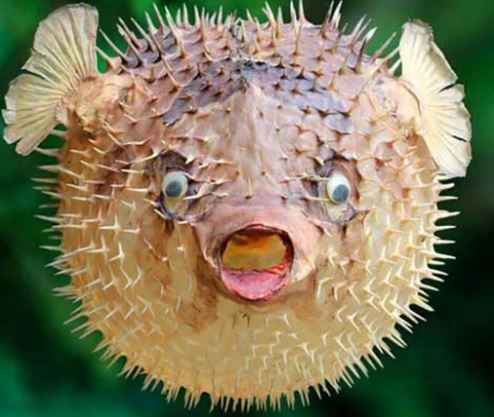
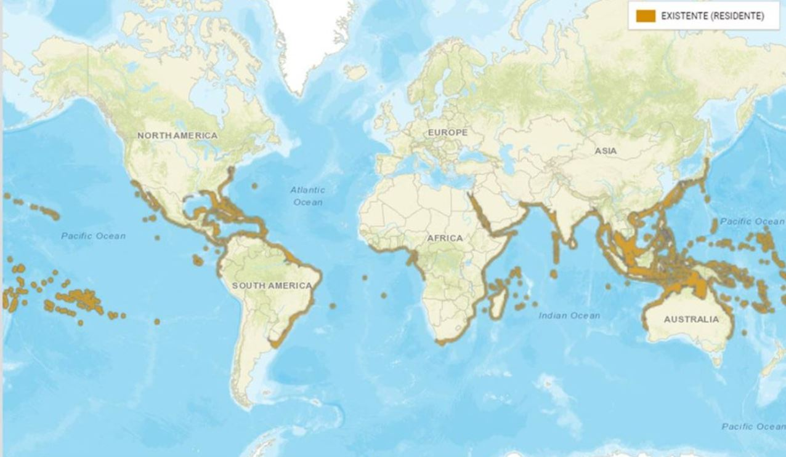

PEZ GLOBO

El pez globo es uno de los peces más curiosos del mundo acuático, famoso por ser capaz de hincharse hasta convertir su cuerpo alargado en una auténtica bola esférica. Sin embargo, detrás de su aspecto divertido se esconde uno de los animales más venenosos del mundo.
A diferencia de lo que se pueda pensar, el pez globo no representa una única especie, sino que, en realidad, se trata de toda una familia de peces conocidos como Tetraodontidae, formada por más de 120 especies y divididas en distintos géneros.
Características del pez globo: Los científicos creen que el pez globo desarrolló esta increíble capacidad como una estrategia de defensa. Los Tetraodontidae utilizan su elástico estómago para ingerir en un breve período de tiempo enormes cantidades de agua y aire, de manera que llegan a doblar varias veces su tamaño. De esta forma, logran escabullirse de muchos de sus depredadores. Además, la mayoría de las especies poseen unas afiladas espinas o púas a través de las cuales desprenden un veneno que les hace tener un sabor muy desagradable. Todo esto convierte al pez globo en una especie poco apetitosa a vista de sus depredadores. Igualmente, si un pez ingiere uno de ellos permanecerá vivo por muy poco tiempo, ya que su veneno es letal
Características del pez globo: Los científicos creen que el pez globo desarrolló esta increíble capacidad como una estrategia de defensa. Los Tetraodontidae utilizan su elástico estómago para ingerir en un breve período de tiempo enormes cantidades de agua y aire, de manera que llegan a doblar varias veces su tamaño. De esta forma, logran escabullirse de muchos de sus depredadores. Además, la mayoría de las especies poseen unas afiladas espinas o púas a través de las cuales desprenden un veneno que les hace tener un sabor muy desagradable. Todo esto convierte al pez globo en una especie poco apetitosa a vista de sus depredadores. Igualmente, si un pez ingiere uno de ellos permanecerá vivo por muy poco tiempo, ya que su veneno es letal
| Tamaño | Su tamaño varía, desde el pez globo enano o pigmeo de 2,5 centímetros de largo al gigante pez globo de agua dulce, que puede crecer hasta más de 61 centímetros de longitud. |
| Alimentación | La dieta del pez globo incluye sobre todo animales invertebrados y algas. Los especímenes más grandes pueden incluso partir cáscaras con su pico duro y comer almejas, mejillones y mariscos. Se cree que los peces globo sintetizan su toxina mortal de la bacteria en los animales que comen. |
| Distribución geográfica |  |